![]()
library(ggplot2)
library(forecast)
library(fpp2)
library(astsa)
library(car)
library(TSA)
library(tseries)
library(urca)Tema VII: Modelos de regresión dinámica
1 librerías
2 Pronóstico del cambio de gasto basado en el ingreso personal
data(uschange)
autoplot(uschange[,1:2], facets=TRUE) +
xlab("Year") + ylab("") +
ggtitle("Quarterly changes in US consumption
and personal income")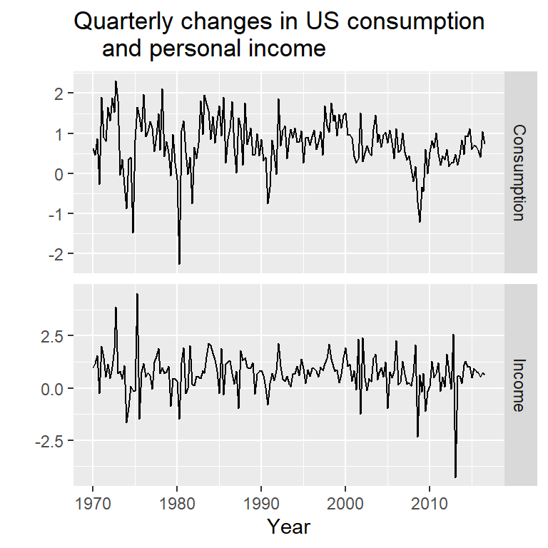
y<-uschange[,"Consumption"]
x<-uschange[,"Income"]2.1 Ilustración de un modelo con errores ARIMA y un modelo de regresión en diferencias
mod0 <- Arima(y, xreg=x, order=c(1,1,0))
summary(mod0)Series: y
Regression with ARIMA(1,1,0) errors
Coefficients:
ar1 xreg
-0.5412 0.1835
s.e. 0.0638 0.0429
sigma^2 = 0.3982: log likelihood = -177.46
AIC=360.93 AICc=361.06 BIC=370.61
Training set error measures:
ME RMSE MAE MPE MAPE MASE
Training set 0.002476011 0.6259787 0.4671324 21.24398 182.2579 0.7319011
ACF1
Training set -0.1727835Es equivalente a
mod1 <- Arima(diff(y), xreg=diff(x), order=c(1,0,0)) #asume que tiene intercepto
summary(mod1)Series: diff(y)
Regression with ARIMA(1,0,0) errors
Coefficients:
ar1 intercept xreg
-0.5413 0.0019 0.1835
s.e. 0.0638 0.0299 0.0429
sigma^2 = 0.4004: log likelihood = -177.46
AIC=362.93 AICc=363.15 BIC=375.83
Training set error measures:
ME RMSE MAE MPE MAPE MASE
Training set -0.0003963677 0.6276524 0.4697909 -181.0816 364.3807 0.5583989
ACF1
Training set -0.1727715mod2 <- Arima(diff(y), xreg=diff(x), include.mean=FALSE , order=c(1,0,0))
summary(mod2)Series: diff(y)
Regression with ARIMA(1,0,0) errors
Coefficients:
ar1 xreg
-0.5412 0.1835
s.e. 0.0638 0.0429
sigma^2 = 0.3982: log likelihood = -177.46
AIC=360.93 AICc=361.06 BIC=370.61
Training set error measures:
ME RMSE MAE MPE MAPE MASE
Training set 0.002486969 0.6276592 0.4696416 -176.5324 360.0201 0.5582214
ACF1
Training set -0.17278812.2 auto.arima
mod <- auto.arima(y, xreg=x)
summary(mod)Series: y
Regression with ARIMA(1,0,2) errors
Coefficients:
ar1 ma1 ma2 intercept xreg
0.6922 -0.5758 0.1984 0.5990 0.2028
s.e. 0.1159 0.1301 0.0756 0.0884 0.0461
sigma^2 = 0.3219: log likelihood = -156.95
AIC=325.91 AICc=326.37 BIC=345.29
Training set error measures:
ME RMSE MAE MPE MAPE MASE
Training set 0.001714366 0.5597088 0.4209056 27.4477 161.8417 0.6594731
ACF1
Training set 0.006299231head(mod$residuals) Qtr1 Qtr2 Qtr3 Qtr4
1970 -0.16714211 -0.31981056 0.07199692 -0.69355381
1971 1.05009349 0.14169806 checkresiduals(mod,lag=20)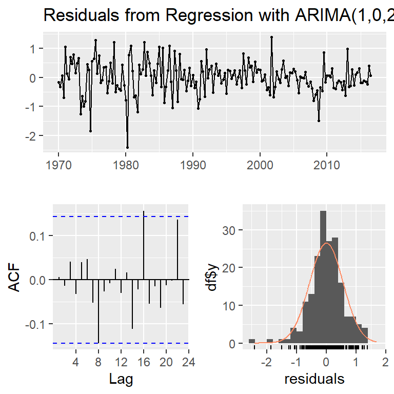
Ljung-Box test
data: Residuals from Regression with ARIMA(1,0,2) errors
Q* = 15.622, df = 17, p-value = 0.5508
Model df: 3. Total lags used: 20res<-mod$res
ts.plot(res)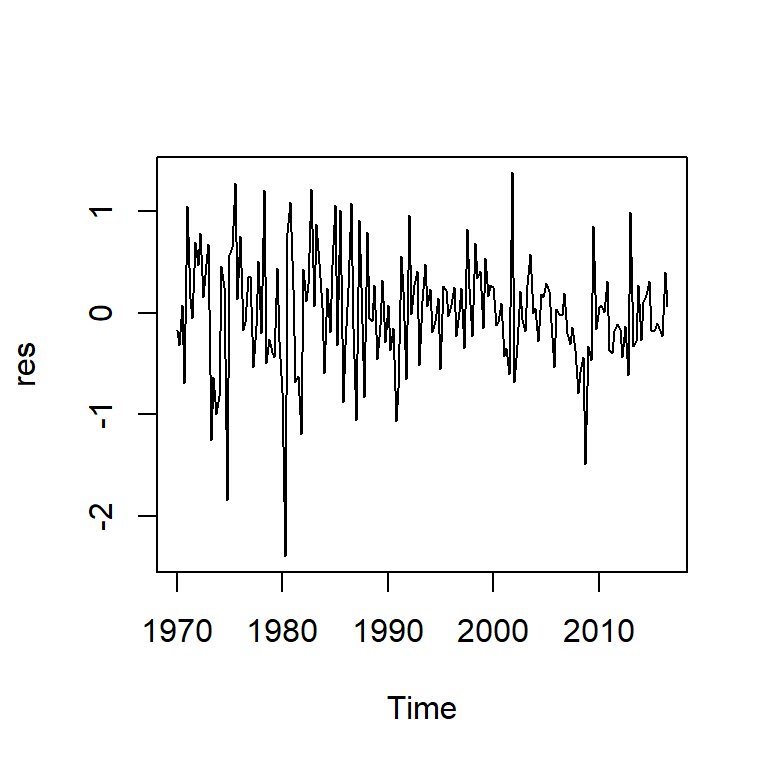
acf2(res)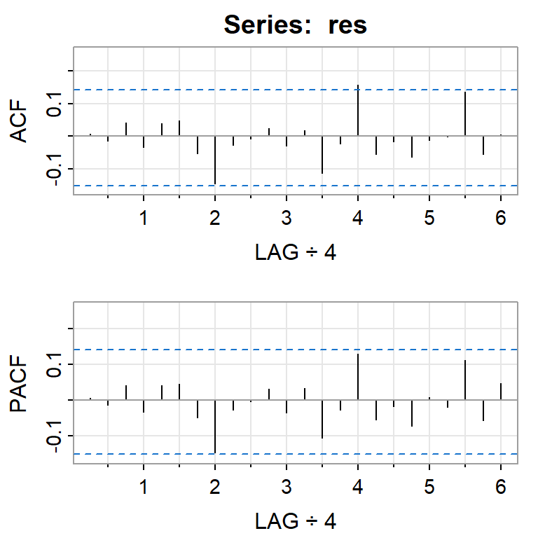
[,1] [,2] [,3] [,4] [,5] [,6] [,7] [,8] [,9] [,10] [,11] [,12] [,13]
ACF 0.01 -0.01 0.04 -0.03 0.04 0.05 -0.05 -0.14 -0.03 -0.01 0.02 -0.03 0.02
PACF 0.01 -0.01 0.04 -0.03 0.04 0.04 -0.05 -0.15 -0.03 0.00 0.03 -0.04 0.03
[,14] [,15] [,16] [,17] [,18] [,19] [,20] [,21] [,22] [,23] [,24]
ACF -0.11 -0.02 0.16 -0.05 -0.02 -0.06 -0.01 0.00 0.14 -0.06 0.01
PACF -0.11 -0.03 0.13 -0.05 -0.02 -0.07 0.01 -0.02 0.11 -0.06 0.05shapiro.test(res)
Shapiro-Wilk normality test
data: res
W = 0.97407, p-value = 0.001497qqPlot(res)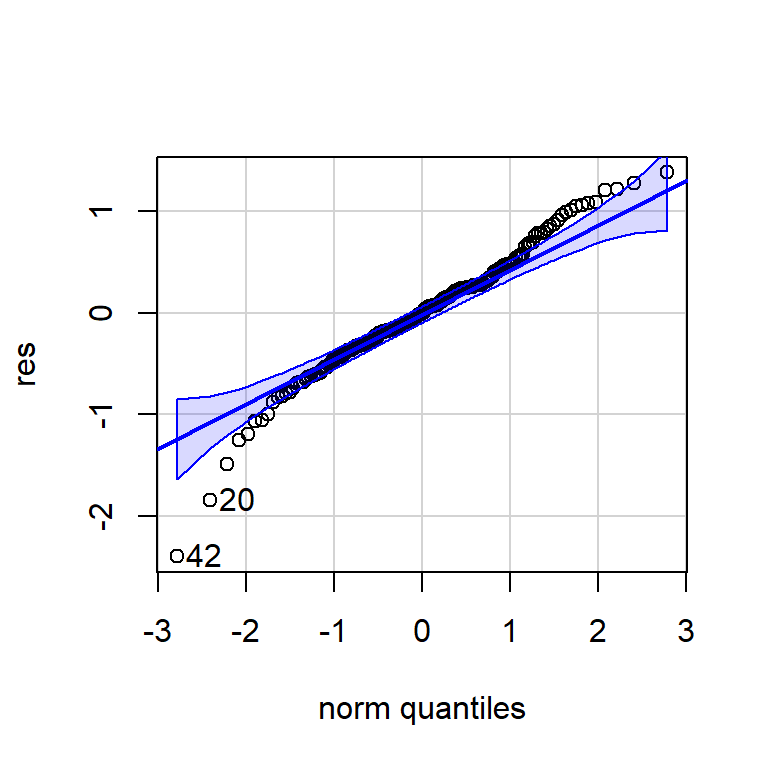
[1] 42 20errores<-cbind("Regression Errors" = residuals(mod, type="regression"),
"ARIMA errors" = residuals(mod, type="innovation"))
head(errores) Regression Errors ARIMA errors
1970 Q1 -0.18024704 -0.16714211
1970 Q2 -0.37577719 -0.31981056
1970 Q3 -0.03728173 0.07199692
1970 Q4 -0.82151101 -0.69355381
1971 Q1 0.89529777 1.05009349
1971 Q2 0.01940569 0.14169806errores %>%
autoplot(facets=TRUE)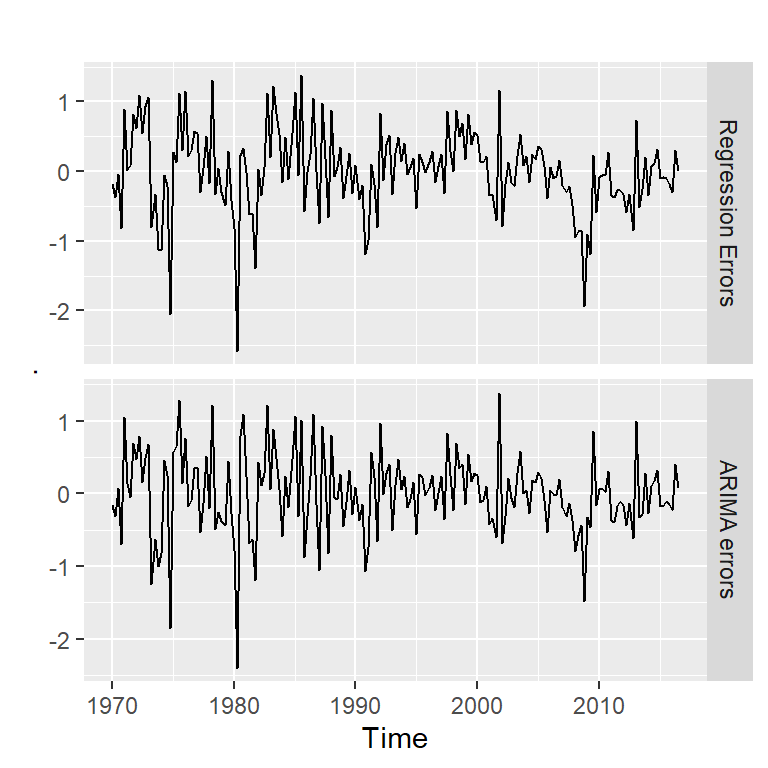
acf2(residuals(mod, type="regression"))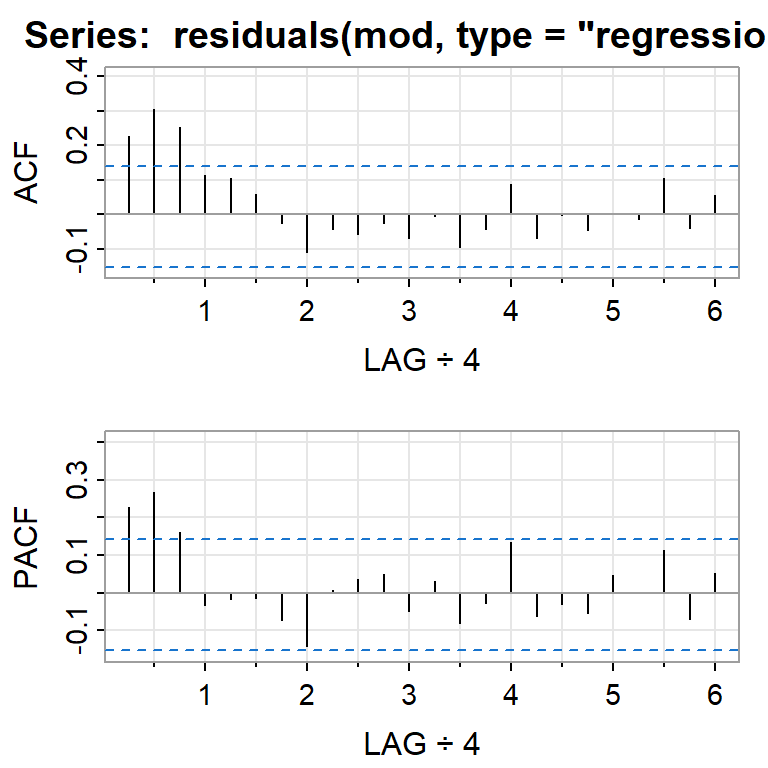
[,1] [,2] [,3] [,4] [,5] [,6] [,7] [,8] [,9] [,10] [,11] [,12] [,13]
ACF 0.23 0.30 0.25 0.11 0.11 0.06 -0.02 -0.11 -0.04 -0.06 -0.02 -0.07 -0.01
PACF 0.23 0.27 0.16 -0.03 -0.02 -0.01 -0.07 -0.14 0.01 0.04 0.05 -0.05 0.03
[,14] [,15] [,16] [,17] [,18] [,19] [,20] [,21] [,22] [,23] [,24]
ACF -0.09 -0.04 0.09 -0.07 0.00 -0.05 0.00 -0.01 0.11 -0.04 0.05
PACF -0.08 -0.03 0.13 -0.06 -0.03 -0.05 0.05 0.00 0.11 -0.07 0.05acf2(residuals(mod, type="innovation"))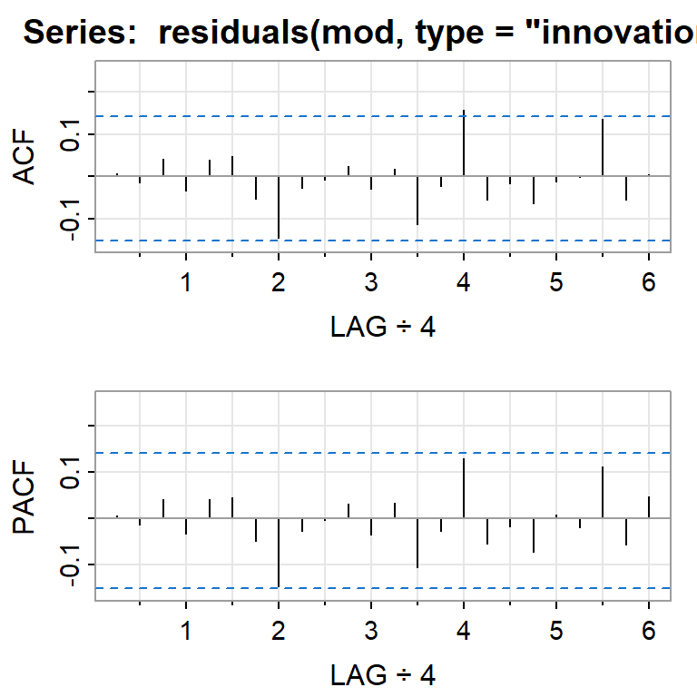
[,1] [,2] [,3] [,4] [,5] [,6] [,7] [,8] [,9] [,10] [,11] [,12] [,13]
ACF 0.01 -0.01 0.04 -0.03 0.04 0.05 -0.05 -0.14 -0.03 -0.01 0.02 -0.03 0.02
PACF 0.01 -0.01 0.04 -0.03 0.04 0.04 -0.05 -0.15 -0.03 0.00 0.03 -0.04 0.03
[,14] [,15] [,16] [,17] [,18] [,19] [,20] [,21] [,22] [,23] [,24]
ACF -0.11 -0.02 0.16 -0.05 -0.02 -0.06 -0.01 0.00 0.14 -0.06 0.01
PACF -0.11 -0.03 0.13 -0.05 -0.02 -0.07 0.01 -0.02 0.11 -0.06 0.052.3 Estimación del modelo de regresión asumiendo errores independientes y normales
mod.reg<-lm(y~x)
summary(mod.reg)
Call:
lm(formula = y ~ x)
Residuals:
Min 1Q Median 3Q Max
-2.40845 -0.31816 0.02558 0.29978 1.45157
Coefficients:
Estimate Std. Error t value Pr(>|t|)
(Intercept) 0.54510 0.05569 9.789 < 2e-16 ***
x 0.28060 0.04744 5.915 1.58e-08 ***
---
Signif. codes: 0 '***' 0.001 '**' 0.01 '*' 0.05 '.' 0.1 ' ' 1
Residual standard error: 0.6026 on 185 degrees of freedom
Multiple R-squared: 0.159, Adjusted R-squared: 0.1545
F-statistic: 34.98 on 1 and 185 DF, p-value: 1.577e-08res.lm<-mod.reg$residuals
ts.plot(res.lm)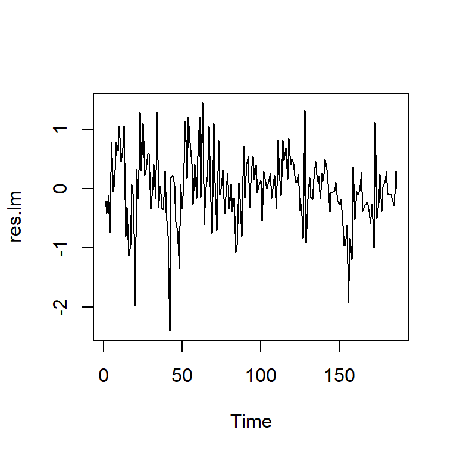
acf2(res.lm)
[,1] [,2] [,3] [,4] [,5] [,6] [,7] [,8] [,9] [,10] [,11] [,12] [,13]
ACF 0.15 0.29 0.21 0.09 0.11 0.05 -0.03 -0.10 -0.04 -0.05 -0.02 -0.07 0.00
PACF 0.15 0.27 0.15 -0.02 0.01 -0.01 -0.08 -0.13 0.00 0.03 0.04 -0.04 0.03
[,14] [,15] [,16] [,17] [,18] [,19] [,20] [,21] [,22] [,23] [,24]
ACF -0.09 -0.04 0.10 -0.08 0.01 -0.06 0.00 -0.02 0.08 -0.05 0.05
PACF -0.07 -0.04 0.14 -0.06 -0.04 -0.07 0.04 0.00 0.09 -0.06 0.05Ajustar un modelo ARIMA a los errores en el segundo paso.
mod.res <- auto.arima(res.lm)
summary(mod.res)Series: res.lm
ARIMA(1,0,2) with zero mean
Coefficients:
ar1 ma1 ma2
0.6692 -0.5997 0.2138
s.e. 0.1318 0.1443 0.0715
sigma^2 = 0.3232: log likelihood = -158.34
AIC=324.67 AICc=324.89 BIC=337.6
Training set error measures:
ME RMSE MAE MPE MAPE MASE
Training set 0.0007856478 0.5639095 0.4195143 104.3124 140.7678 0.723367
ACF1
Training set 0.00090708183 Tendencia determinística y estocástica
set.seed(123456)
e <- rnorm(500)## caminata aleatoria
rw.nd <- cumsum(e)
## tendencia
tend <- 1:500
## caminata aleatoria con desvío
rw.wd <- 0.5*tend + cumsum(e)
## tendencia determinística con ruido
dt <- e + 0.5*tend
## plotting
par(mar=rep(5,4))
plot.ts(dt, lty=1, col=1, ylab='', xlab='')
lines(rw.wd, lty=2, col= 2)
par(new=T)
plot.ts(rw.nd, lty=3, col=3, axes=FALSE)
axis(4, pretty(range(rw.nd)))
legend(10, 18.7, legend=c('tend. determ. + ruido ',
'tend. determ. + tend. estocast.', 'tend. estocast.'),
lty=c(1, 2, 3),col=c(1,2,3)) 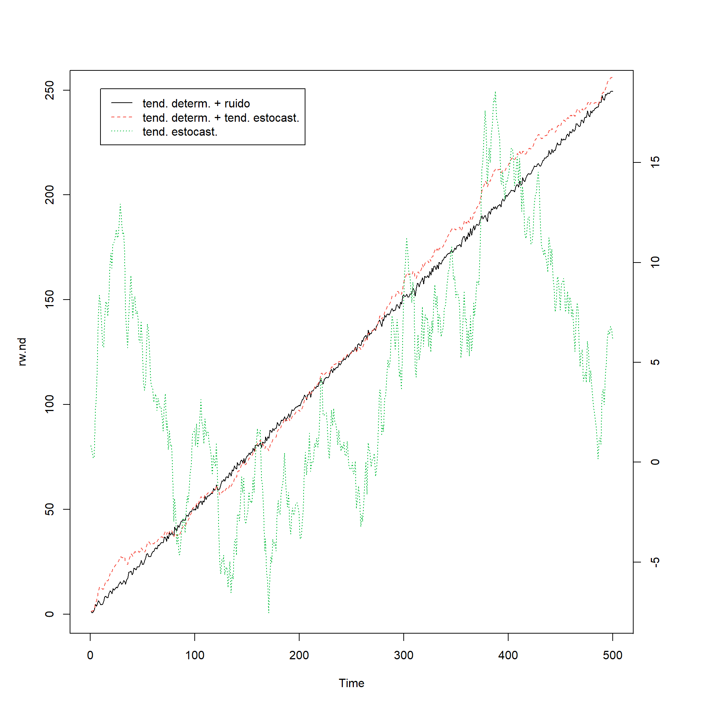
4 Regresión con variables independientes rezagadas
4.1 Cotización mensual y gastos en publicidad de una compañía estadounidense (enero, 2002- abril, 2005)
data(insurance)
autoplot(insurance, facets=TRUE) +
xlab("año") + ylab("") +
ggtitle("Cotización mensual y gastos en anuncios")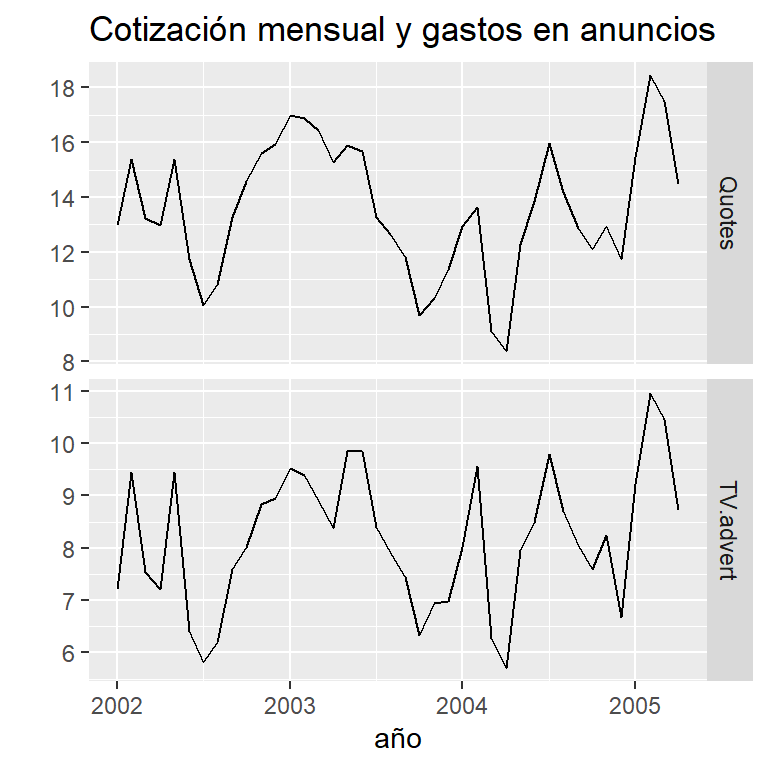
y<- insurance[,"Quotes"]
x<- insurance[,"TV.advert"]4.2 Predictores rezagadas (0,1,2 y 3 rezagos)
anuncios <- cbind(
x0 = x,
x1 = stats::lag(x,-1),
x2 = stats::lag(x,-2),
x3 = stats::lag(x,-3)) %>%
head(NROW(insurance)) #eliminar los NA al final
anuncios[1:10,] x0 x1 x2 x3
[1,] 7.212725 NA NA NA
[2,] 9.443570 7.212725 NA NA
[3,] 7.534250 9.443570 7.212725 NA
[4,] 7.212725 7.534250 9.443570 7.212725
[5,] 9.443570 7.212725 7.534250 9.443570
[6,] 6.415215 9.443570 7.212725 7.534250
[7,] 5.806990 6.415215 9.443570 7.212725
[8,] 6.203600 5.806990 6.415215 9.443570
[9,] 7.586430 6.203600 5.806990 6.415215
[10,] 8.004935 7.586430 6.203600 5.8069904.3 Restringir datos para comparar los modelos del mismo periodo
(mod1 <- auto.arima(insurance[4:40,1], xreg=anuncios[4:40,1],
stationary=TRUE))Series: insurance[4:40, 1]
Regression with ARIMA(2,0,0) errors
Coefficients:
ar1 ar2 intercept xreg
1.2321 -0.4642 3.4263 1.2413
s.e. 0.1636 0.1708 0.6805 0.0751
sigma^2 = 0.2891: log likelihood = -28.28
AIC=66.56 AICc=68.5 BIC=74.62(mod2 <- auto.arima(insurance[4:40,1], xreg=anuncios[4:40,1:2],
stationary=TRUE))Series: insurance[4:40, 1]
Regression with ARIMA(1,0,1) errors
Coefficients:
ar1 ma1 x0 x1
0.6718 0.6713 1.3770 0.2745
s.e. 0.1324 0.1302 0.0374 0.0362
sigma^2 = 0.2285: log likelihood = -24.04
AIC=58.09 AICc=60.02 BIC=66.14(mod3 <- auto.arima(insurance[4:40,1], xreg=anuncios[4:40,1:3],
stationary=TRUE))Series: insurance[4:40, 1]
Regression with ARIMA(1,0,1) errors
Coefficients:
ar1 ma1 x0 x1 x2
0.6701 0.6757 1.3843 0.2764 -0.0111
s.e. 0.1349 0.1311 0.0487 0.0369 0.0470
sigma^2 = 0.2352: log likelihood = -24.02
AIC=60.03 AICc=62.83 BIC=69.7(mod4 <- auto.arima(insurance[4:40,1], xreg=anuncios[4:40,1:4],
stationary=TRUE))Series: insurance[4:40, 1]
Regression with ARIMA(1,0,1) errors
Coefficients:
ar1 ma1 intercept x0 x1 x2 x3
0.7567 0.6071 3.6314 1.2901 0.1323 -0.1303 -0.0643
s.e. 0.1155 0.1369 1.8656 0.0656 0.0797 0.0759 0.0612
sigma^2 = 0.2262: log likelihood = -22.16
AIC=60.31 AICc=65.46 BIC=73.2c(mod1[["aicc"]],mod2[["aicc"]],mod3[["aicc"]],mod4[["aicc"]])[1] 68.49968 60.02357 62.83253 65.45747(mod.final <- auto.arima(insurance[,1], xreg=anuncios[,1:2],
stationary=TRUE))Series: insurance[, 1]
Regression with ARIMA(3,0,0) errors
Coefficients:
ar1 ar2 ar3 intercept x0 x1
1.4117 -0.9317 0.3591 2.0393 1.2564 0.1625
s.e. 0.1698 0.2545 0.1592 0.9931 0.0667 0.0591
sigma^2 = 0.2165: log likelihood = -23.89
AIC=61.78 AICc=65.4 BIC=73.434.4 pronóstico
pronostico <- forecast(mod.final, h=20,
xreg=cbind(x0 = rep(8,20),
x1 = c(anuncios[40,1], rep(8,19))))
autoplot(pronostico) + ylab("Cotización") +
ggtitle("Proyección")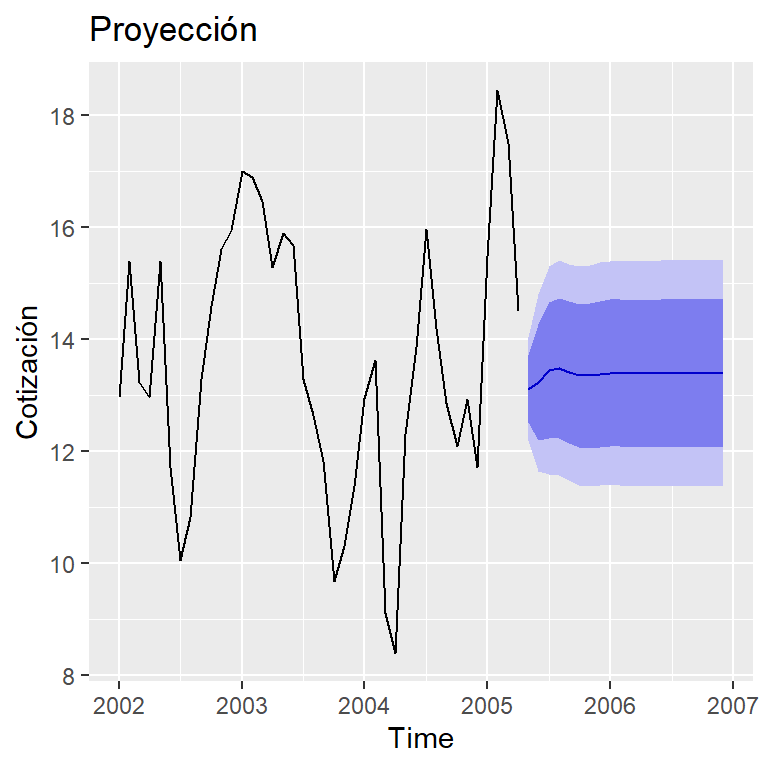